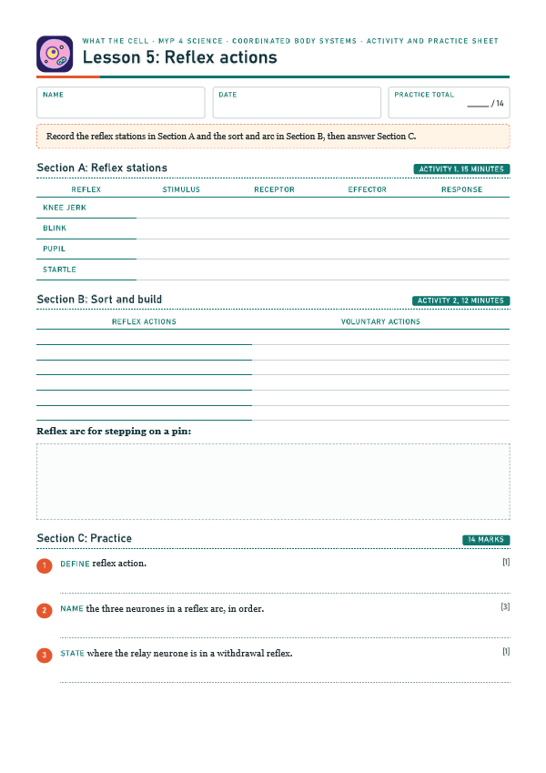

By the end of the lesson you can
- Define a reflex action
- Describe the path of a reflex arc
- Explain why reflexes are fast and protective
- Distinguish reflex from voluntary actions
Keys: arrows or a presentation clicker move the slides, F for full screen. Slides with a red dot have a video or simulation.
Videos (all 5 minutes or less)
- 2:35
What is a reflex arc?
FuseSchool. While you watch: Why are reflexes important? Slide 8.
Simulations
- Lab
Print and practise

Activity and practice sheet
Used in the lesson’s activities, with practice questions. Your teacher has the answers.
Download (PDF)Lesson 5 slides
All 14 slides in one file, to read again or print. The video buttons on the slides open YouTube.
Download the slides (PDF)Revising? The Revision tab on the unit page has the unit notes and review.
Class activity pack
Everything to print for the lesson’s activities: picture cards, sorting mats, station cards with their kit lists, and the teacher’s set-up notes. Print it before class.
Download the activity pack (PDF)Notes: Reflex actions
reflex action
A fast, automatic response that does not need thinking. For example: blinking.
reflex arc
The pathway of neurones in a reflex. For example: receptor to effector via the spinal cord.
voluntary action
An action you decide to make. For example: picking up a pen.
spinal cord
Part of the CNS that coordinates many reflexes. For example: inside the backbone.
relay neurone
Links the sensory and motor neurones in the spinal cord. For example: in the reflex arc.
protective
Helps keep you safe from harm. For example: pulling away from heat.
Key words
| reflex action | fast, automatic response |
|---|---|
| reflex arc | receptor, sensory, relay, motor, effector |
| voluntary action | a response you choose |
| relay neurone | in the CNS, links sensory and motor |
| spinal cord | coordinates many reflexes |